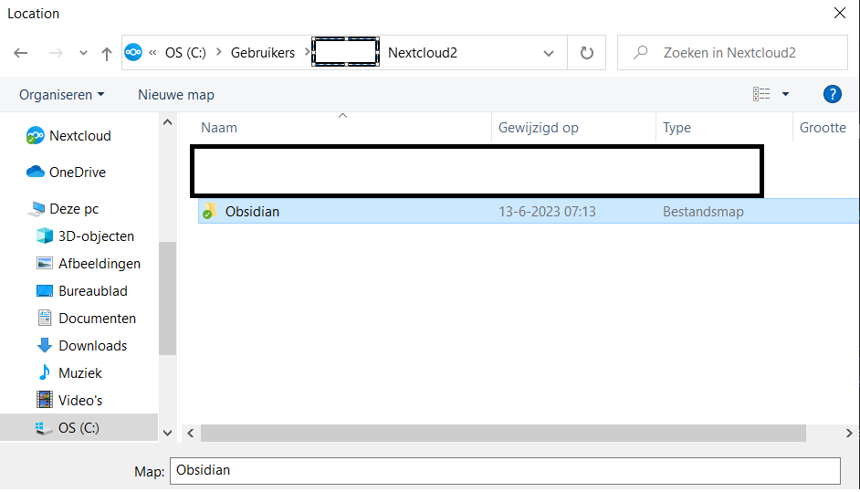

Inleiding
Hallo hallo!
Vorige post heb ik verteld hoe je Nextcloud kunt hosten op je Raspberry Pi. In deze post wil ik jullie uitleggen hoe je Nextcloud vervolgens kunt koppelen met een Obsidian vault om deze te synchroniseren met verschillende apparaten. Ook zijn er twee (ik vind het merkwaardige) problemen waarvoor ik ook een oplossing zal bespreken.
Maar eerst de Obsidian vault in Nextcloud starten!
Obsidian vault in Nextcloud
Allereerst is het verstandig om naast het Nextcloud Admin account, ook een los account te maken voor het dagelijkse gebruik. Klik hier om naar de uitleg te gaan om gebruikers toe te voegen.
Wanneer je dat gedaan hebt, heb je zowel de Nextcloud Client als Obsidian nodig op je computer.
Obsidian Download Pagina Nextcloud Client Download Pagina
Na de installatie log je in met de aangemaakte gebruiker via de URL die je hebt gekozen bij het opzetten van de Nextcloud server. Vervolgens kan je dan een Obsidian vault maken in de Nextcloud map (ik heb een losse map “Obsidian” gemaakt in de Nextcloud map en die gekozen voor de Obsidian vault).

En dat was het eigenlijk al, wanneer je nu op je laptop ook Obsidian en de Nextcloud client installeert, hoef je alleen nog maar de vault te openen die in je Nextcloud map zit. Tada, je Obsidian vault wordt nu gesynchroniseerd tussen je laptop en desktop.
Hierboven heb ik het specifiek over een laptop en een desktop, maar ik denk dat het gebruikelijker is om een laptop/desktop te willen synchroniseren met een mobiel apparaat (telefoon of tablet). Dat wil ik namelijk ook! Helaas komen we nu in aanraking met merkwaardig probleem nummer één.
Merkwaardig probleem: Mobiele Nextcloud Client Synchroniseert niet twee kanten op
Het probleem is dat de mobiele Nextcloud client, geen synchronisatie heeft die twee kanten op werkt (two-way sync). Hierdoor worden aanpassingen in bestaande bestanden niet opnieuw geüpload naar Nextcloud, waardoor je andere apparaten die updates niet hebben. Ik vind het vervelend dat de mobiele client dat niet kan (hopelijk gaat iemand het ooit maken er is een bounty voor: https://app.bountysource.com/issues/35153835-allow-2-way-sync), maar gelukkig is er wel een manier om dit probleem op te lossen.
De oplossing is: nog een andere applicatie, namelijk Syncthing. Met Syncthing kan je verschillende mappen synchroniseren met apparaten die op hetzelfde netwerk zitten. Dit lost bovenstaand probleem op door de map waar je Obsidian vault in zit op je mobiel, te synchroniseren naar je computer. De computer synchroniseert dan wel naar Nextcloud via de Nextcloud Client, omdat die wel two-way sync ondersteunt.
Allereerst installeer je Syncthing op zowel je laptop als je mobiel (via de Playstore of App Store)
Syncthing Download Pagina(Ik heb zelf de Base Syncthing gedownload. De uitleg in deze post gaat dus ook over die versie van Syncthing) Synchthing Play Store
Na de installatie en het starten van Syncthing navigeer je naar http://localhost:8384/ om naar de grafische interface (GUI) van Syncthing te gaan (dat ziet er uit zoals hieronder).

Als eerste moet je op je laptop je mobiel als extern apparaat (remote device) toevoegen. En vervolgens voeg je, op je mobiel, de laptop toe als extern apparaat. Alleen dan is er voor beide apparaten toestemming om met elkaar te synchroniseren. Dit doe je voor je laptop door op “Extern Apparaat Toevoegen” (“Add Remote Device”) in de GUI te klikken en dan het Apparaat ID (van je mobiel, deze is te vinden door de mobiele app te openen, dan linksboven het menu te openen en daar op Show Device ID te klikken) en de naam van het Apparaat in te vullen (let wel op dat beide apparaten op hetzelfde netwerk zitten). Nadat je dat hebt gedaan zal het toegevoegd apparaat onder Externe Apparaten (Remote Devices verschijnen).
Voor de mobiele app werkt het nagenoeg hetzelfde.
- Open de app
- Navigeer naar devices
- Klik op het plusje (rechtsboven)
- Vul hier het Device ID (van je laptop, deze is te vinden door in de GUI op “Acties” (“Actions”) te klikken en dan op “ID weergeven” (“Show ID”)) en “Name” in te vullen.
Nu kunnen je laptop en mobiel met elkaar synchroniseren, alleen moet je nog vertellen welke map(pen) ze met elkaar synchroniseren.
Je begint op je laptop (waar ook Nextcloud opstaat) en in de GUI klik je op “Map Toevoegen” (“Add Folder”). Dan vul je de map waar je Obsidian vault staat in in het “MapLocatie” (“Folder Location”) veld. Vervolgens ga je naar de “Delen” (“Share”) tab en daar vink je je mobiel aan. Tot slot klik je op “Opslaan” (“Save”).
Dan moet je op je mobiel dezelfde folder toevoegen.
- Open de App
- Navigeer naar Folders
- Klik op het plusje (rechtsboven)
- Vul bij Folder Label hetzelfde label in als die in de GUI op je laptop
- Vink aan met welk apparaat je wilt delen (de naam van je Laptop)
- Kies een “Directory” waar je de gedeelde data wilt opslaan (onthoudt deze)
Wanneer je deze stappen hebt gevolgd, dan kan je ieder moment dat je mobiel en computer op hetzelfde netwerk zitten, de folders synchroniseren. Je hoeft alleen Syncthing op te starten.
Nu kan je op je mobiel de Obsidian App downloaden en de Obsidian Vault openen die je in bovenstaande folder (stap 6) hebt gekozen om te synchroniseren.
Merkwaardig probleem: Je kunt niet snel een notitie maken met Obsidian mobiel
Dan nu naar het tweede merkwaardige probleem, namelijk dat je eerst je telefoon ontgrendelt, dan de Obsidian app moet openen, links boven op het krant (ik weet eigenlijk niet goed hoe je zo een icoontje noemt, maar krant lijkt er het meeste op) icoontje klikken en dan links onder op het papier en potlood icoontje, je typt je notitie en als laatste sluit je de app. Dat zijn te veel handelingen om even snel een notitie te maken van wat je hoort, leest, tegenkomt of herinnert. Jammer genoeg kan je ook geen Obsidian widget instellen. Daarom moet je zelf een (soort van) widget maken.
Hiervoor gebruik je een andere app, namelijk Macrodroid. Macrodroid is een app waarmee je door het klikken van één knop verschillende acties kunt doen, dat heet een macro. Of je kan door één klik een input schermpje openen waarin je een notitie kan typen en wanneer je op “ok” drukt die automatisch toevoegen aan je Obsidian notitie van de dag. Een extraatje is dat je deze knop op je startscherm kunt zetten. Waardoor je alleen nog deze stappen hoeft te doen: telefoon ontgrendelen, op de gemaakte widget klikken, notitie typen en dan “ok” je notitie is opgeslagen. Dat maakt opkomende ideeën zoveel makkelijker om op te slaan.
Hieronder staat beschreven hoe je dat zelf kunt instellen op je telefoon.
- Open MacroDroid en klik op “Add Macro”
- Geef de macro een naam. Bijvoorbeeld: Snel Notitie Toevoegen
- Stel een trigger in en kies “Shortcut Launched” (zie afbeelding hieronder)

- Stel een actie in en kies “Set Variable” en stel deze in (zie afbeeldingen hieronder)

- Voer “input” in als variable name
- Kies “String” als variable type
- Vink Create variable now aan
- Klik op “OK”

- Vink [User Prompt] aan
- Klik op “OK”

- Vul een Title naar keuze in
- Vink de volgende vakjes aan: “Allow cancel”, “Cancel prevents subsequent actions running” en “Dark mode (als je dat wilt)”
- Klik op “OK”

- Voeg nog een actie toe, “Write to file” en stel in (zie afbeeldingen hieronder)

- Bij “Select Folder” kies je je Obsidian folder (ik heb in de Obsidian Vault een folder gemaakt genaamd Inbox. Hierin worden alle notities opgeslagen en die verwerk ik dan 1x in de week)
- Vul {year}-{month_digit}-{dayofmonth}.md in bij “filename”. De namen tussen de curly brackets ({}) zijn variabelen en die worden ingevuld door MacroDroid. Het resultaat daarvan is bijvoorbeeld 2023-06-30.md
- Vul - [ ] {lv=input} in bij “Enter Text”. Deze regel zorgt ervoor dat er in je nieuwe notitie een nieuwe regel wordt gemaakt die begint met een checkbox. Achter de checkbox komt dan je notitie.
- Kies “Append to file” zodat je een nieuwe notitie toevoeg aan de bestaande file en die niet overschrijft waardoor je je oude notities van die dag behoudt.

- Je macro ziet er nu zo uit

- Sla de macro op en nu kan je via een Widget de Macro aan je scherm toevoegen.
- Voeg een Widget toe
- Kies “MacroDroid Custom”
- Selecteer de gemaakte Macro
Tada, nu heb je een makkelijke manier om notities toe te voegen aan Obsidian!
Met deze twee extra applicaties is het dus mogelijk om de twee tekortkomingen van Nextcloud en Obsidian op te lossen. Ik hoop zelf dat er in de toekomst updates van beide applicaties komen zodat je niet nog twee extra apps nodig hebt. Maar tot die tijd is dit een fantastische oplossing.
Veel plezier en tot de volgende keer :)
Mees